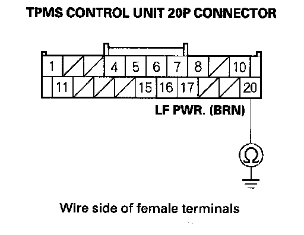
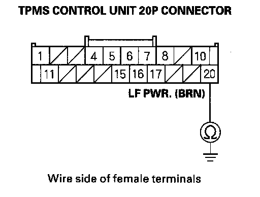
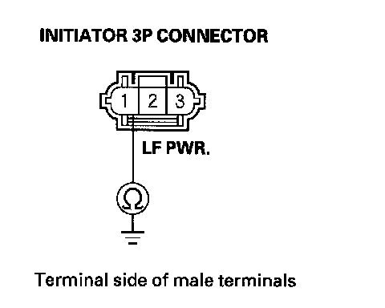
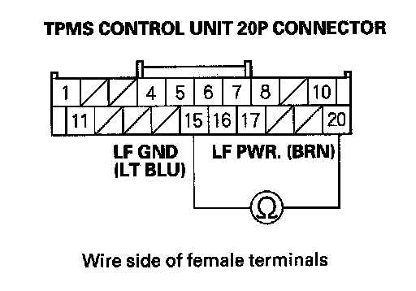
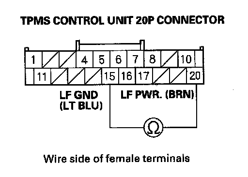
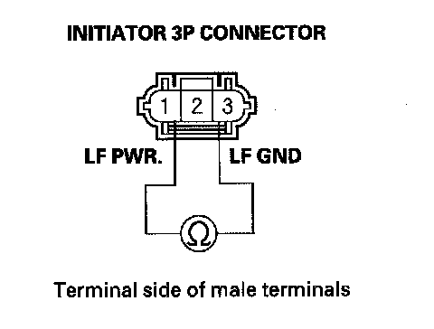
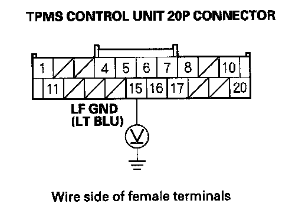

Tire Pressure Monitoring System
DTC 45: Initiator Circuit Short Detection1. Turn the ignition switch ON (II).
2. Clear the DTC with the HDS.
3. Turn the ignition switch OFF, then turn the ignition switch ON (II) again.
4. Check for DTCs with the HDS.
Is DTC 45 indicated?
YES - Go to step 5.
NO - The system is OK at this time.
5. Turn the ignition switch OFF.
6. Disconnect the TPMS control unit 20P connector.
7. Check for continuity between body ground and TPMS control unit 20P connector terminal No. 20.
Is there continuity?

YES - Go to step 8.
NO - Go to step 11.
8. Disconnect all four of the initiator 3P connectors.
9. Check for continuity between body ground and TPMS control unit 20P connector terminal No. 20.

Is there continuity?
YES - Repair short to body ground in the wire between the TPMS control unit and the initiators.
NO - Go to step 10.
10. On each individual initiator, check for continuity between body ground and initiator 3P connector terminal No. 1.
NOTE: Check the initiators when mounted on the vehicle.

Is there continuity?
YES - Replace the appropriate initiator.
NO - Check for loose terminals and poor connections at the TPMS control unit. If necessary, substitute a known-good TPMS control unit and recheck.
11. Check for continuity between TPMS control unit 20P connector terminals No. 15 and No. 20.

Is there continuity?
YES - Go to step 12.
NO - Go to step 15.
12. Disconnect all four of the initiator 3P connectors.
13. Check for continuity between TPMS control unit 20P connector terminals No. 15 and No. 20.

Is there continuity?
YES - Repair short in the wire between TPMS control unit 20P connector terminals No. 15 (LF GND line) and No. 20 (LF PWR. line).
NO - Go to step 14.
14. On the initiator side, check for continuity between all four initiator 3P connector terminals No. 1 and No. 3 individually.

Is there continuity?
YES - Replace the appropriate initiator.
NO - Check for loose terminals and poor connections at the TPMS control unit. If necessary, substitute a known-good TPMS control unit and recheck.
15. Turn the ignition switch ON (II).
16. Measure voltage between body ground and TPMS control unit 20P connector terminal No. 15.

Is there battery voltage?
YES - Repair short to power in the wire between the TPMS control unit and the initiators.
NO - Check for loose terminals and poor connections at the TPMS control unit. If necessary, substitute a known-good TPMS control unit and recheck.